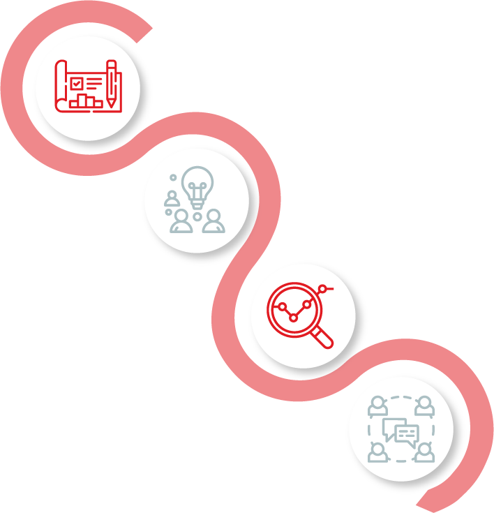

To understand the impact of decisions on climate exposures and property coverage, many companies are including risk managers in the discussion.


Every company is at a different point in its ESG journey as measured by planning, monitoring and reporting.